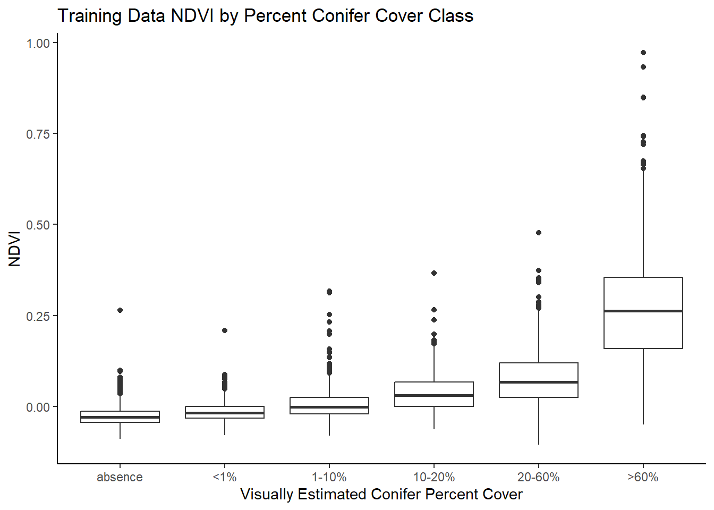
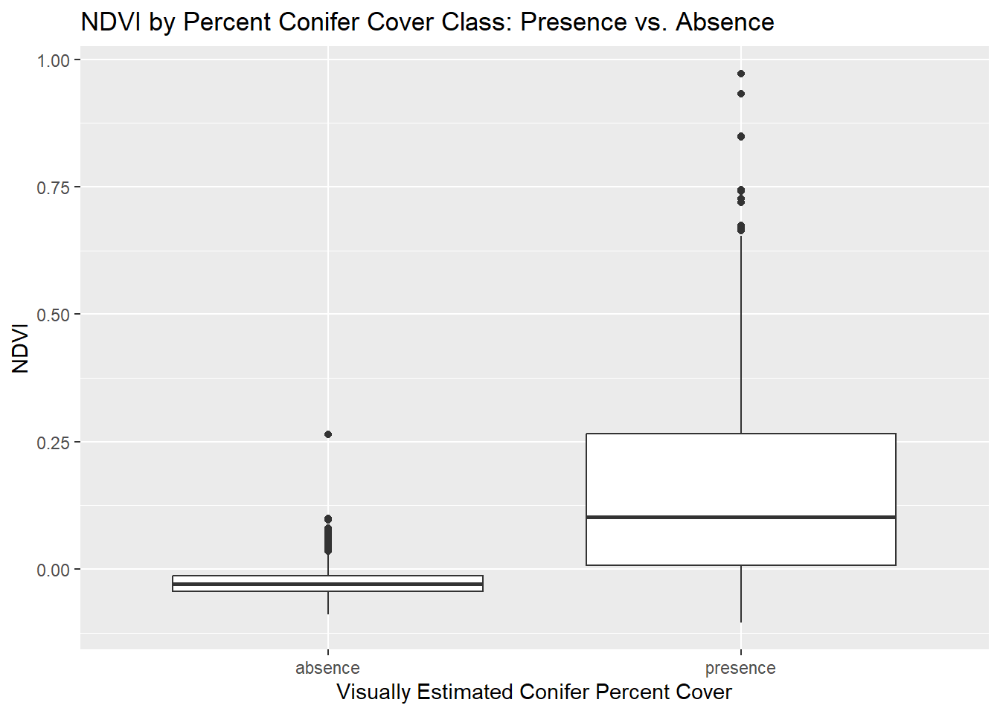

Part 8 Model Development
8.1 Set Up
8.1.1 Libraries
library(mapview)
library(sf)
library(terra)
library(tidyverse)
library(ggplot2)
library(car)
library(forcats)
library(randomForest)
library(raster)8.1.2 Import Fire Boundaries
fires_export <- st_read("data/fire_boundaries/fires_export.shp")%>%
st_transform(., crs="EPSG: 4326")## Reading layer `fires_export' from data source
## `G:\Other computers\My Laptop\Documents\Grad School\Research\ConiferRegeneration\data\fire_boundaries\fires_export.shp'
## using driver `ESRI Shapefile'
## Simple feature collection with 54 features and 20 fields
## Geometry type: MULTIPOLYGON
## Dimension: XY
## Bounding box: xmin: -118.6259 ymin: 42.57259 xmax: -106.9485 ymax: 48.9346
## Geodetic CRS: WGS 84crs <- crs(fires_export)8.1.3 Import Training Points
# bring in training points
points <- st_read("data/points/points_export.shp") %>%
st_transform(crs=crs)%>%
drop_na()## Reading layer `points_export' from data source
## `G:\Other computers\My Laptop\Documents\Grad School\Research\ConiferRegeneration\data\points\points_export.shp'
## using driver `ESRI Shapefile'
## Simple feature collection with 4472 features and 11 fields
## Geometry type: POINT
## Dimension: XY
## Bounding box: xmin: -118.6075 ymin: 42.57725 xmax: -106.9652 ymax: 48.83974
## Geodetic CRS: WGS 848.2 Prepare Imagery
8.2.1 Prepare Data for Bands and Fire Names
8.2.1.1 Bands
# list band names and years
bands <- c("blue", "green", "red", "nir", "swir1", "swir2", "ndvi", "ndwi", "nbr", "nbr2", "ndsi", "ndfsi", "evi")
years <- c(1984:2020)
# create list of all combinations of bands, in the appropriate order
bandnames <- list(bands,years) %>%
cross() %>%
map(lift(paste0))
bandlist <- do.call(rbind,bandnames)8.2.2 Merge Large Rasters
# function to merge rasters, if there are multiple in the folder
export_rasters <- function(fire_name){
print(paste0("Starting Fire ",fire_name))
# get list of this fire's tif files
rast_list <- list.files(path = "data/landsat/landsat_annual", pattern=fire_name, all.files=TRUE, full.names=TRUE)
# larger rasters were exported from GEE as multiple files, need to be combined before importing
if (length(rast_list)>1) {
print(paste0(length(rast_list)," rasters, merging..."))
rast_all <- lapply(rast_list, rast)
rast_collection <- do.call(merge,rast_all)
writeRaster(rast_collection, str_c("data/landsat/landsat_annual/",fire_name,".tif"), overwrite=FALSE,gdal="COMPRESS=NONE")
} else {
print("Only one raster, can extract directly")
}
}map(fire_names_all,export_rasters)8.3 Extract Landsat Data
extract_landsat <- function(fire_name){
print(paste0("Starting Fire ",fire_name))
# get this fire's tif files
rast_list <- list.files(path = "data/landsat/landsat_training", pattern=str_c(fire_name,".tif"), all.files=TRUE, full.names=TRUE)
rast_fire <- rast(rast_list)
# name the bands
names(rast_fire) <- bands
# verify crs
crs(rast_fire) <- "EPSG: 4326"
# filter the points for this fire
fire_points <- points %>%
filter(Fire_ID==fire_name) %>%
st_transform(crs=crs(rast_fire))
# get the mean landsat values for each patch in this fire
extracted_points <- st_as_sf(terra::extract(rast_fire, fire_points,bind = TRUE))
# export
return(extracted_points)
}# extract landsat values to each training point
extracted_df <- map(fire_names_points, extract_landsat)8.3.1 Prepare Dataset
# compile dataset and clean dataset
training_dataset <- do.call(rbind,extracted_df) %>%
mutate(absence = as.factor(case_when(class == "absence" ~ "absence",
TRUE ~ "presence")),
binom = as.factor(case_when(class == "absence" ~ 0,
TRUE ~ 1)),
class = case_when(class == "presence20to40" ~ "20-60%",
class == "presence40to60" ~ "20-60%",
class == "presence10to20" ~ "10-20%",
class == "presence1to10" ~ "1-10%",
class == "presencetrace" ~ "<1%",
class == "presence60plus" ~ ">60%",
TRUE ~ "absence"),
class = fct_relevel(as.factor(class),c("absence","<1%","1-10%","10-20%","20-60%",">60%"))) %>%
st_drop_geometry() %>%
dplyr::select(-qd_vnt_,-qd_fr_d) %>%
drop_na(ndvi)8.4 Examine Data
8.4.1 Plot NDVI by Density Class
ggplot(training_dataset,aes(class,ndvi)) +
geom_boxplot() +
labs(title = "NDVI by Percent Conifer Cover Class: All Classes",x = "Visually Estimated Conifer Percent Cover",y = "NDVI")
ggplot(training_dataset %>% filter(class %in% c("absence","<1%")),aes(class,ndvi)) +
geom_boxplot()+
ylim(-.1,.1) +
labs(title = "NDVI by Percent Conifer Cover Class: Trace Conifer Class vs. Absence",x = "Visually Estimated Conifer Percent Cover",y = "NDVI")
ggplot(training_dataset,aes(absence,ndvi)) +
geom_boxplot() +
labs(title = "NDVI by Percent Conifer Cover Class: Presence vs. Absence ",x = "Visually Estimated Conifer Percent Cover",y = "NDVI")
8.5 Model
8.5.1 Create Random Forest
rf_conifer <- randomForest(binom ~ red + green + blue + nir + swir1 + swir2 + ndsi + ndfsi + ndvi + evi + nbr + nbr2 + ndwi, data = training_dataset %>% drop_na())8.5.2 Evaluate
rf_conifer##
## Call:
## randomForest(formula = binom ~ red + green + blue + nir + swir1 + swir2 + ndsi + ndfsi + ndvi + evi + nbr + nbr2 + ndwi, data = training_dataset %>% drop_na())
## Type of random forest: classification
## Number of trees: 500
## No. of variables tried at each split: 3
##
## OOB estimate of error rate: 11.78%
## Confusion matrix:
## 0 1 class.error
## 0 714 259 0.26618705
## 1 265 3210 0.07625899randomForest::importance(rf_conifer)## MeanDecreaseGini
## red 67.37487
## green 73.53071
## blue 87.04423
## nir 59.88719
## swir1 74.78012
## swir2 105.48392
## ndsi 79.83266
## ndfsi 85.53405
## ndvi 315.66989
## evi 75.21999
## nbr 119.30993
## nbr2 125.31452
## ndwi 250.51643rf_conifer$confusion## 0 1 class.error
## 0 714 259 0.26618705
## 1 265 3210 0.07625899# summary
summary(rf_conifer)## Length Class Mode
## call 3 -none- call
## type 1 -none- character
## predicted 4448 factor numeric
## err.rate 1500 -none- numeric
## confusion 6 -none- numeric
## votes 8896 matrix numeric
## oob.times 4448 -none- numeric
## classes 2 -none- character
## importance 13 -none- numeric
## importanceSD 0 -none- NULL
## localImportance 0 -none- NULL
## proximity 0 -none- NULL
## ntree 1 -none- numeric
## mtry 1 -none- numeric
## forest 14 -none- list
## y 4448 factor numeric
## test 0 -none- NULL
## inbag 0 -none- NULL
## terms 3 terms call# export
# saveRDS(rf_conifer,"data/models/rf_conifer.rds")